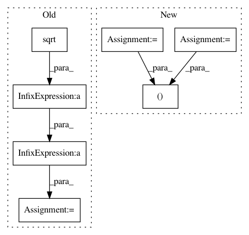

c0b94f051b458fdf27e41b2b4631421180b8883c,GPy/likelihoods/noise_models/noise_distributions.py,NoiseDistribution,_predictive_mean_numerical,#NoiseDistribution#Any#Any#,298
Before Change
maximum = sp.optimize.fmin_ncg(self._nlog_conditional_mean_scaled,x0=self._mean(mu),fprime=self._dnlog_conditional_mean_dgp,fhess=self._d2nlog_conditional_mean_dgp2,args=(mu,sigma),disp=False)
mean = np.exp(-self._nlog_conditional_mean_scaled(maximum,mu,sigma))/(np.sqrt(self._d2nlog_conditional_mean_dgp2(maximum,mu,sigma))*sigma)
pb.figure()
x = np.array([mu + step*sigma for step in np.linspace(-7,7,100)])
After Change
//Compute first moment
def int_mean(f):
return self._mean(f)*np.exp(-(0.5/sigma2)*np.square(f - mu))
scaled_mean, accuracy = quad(int_mean, -np.inf, np.inf)
mean = scaled_mean / np.sqrt(2*np.pi*(sigma2))
return mean
In pattern: SUPERPATTERN
Frequency: 3
Non-data size: 7
Instances
Project Name: SheffieldML/GPy
Commit Name: c0b94f051b458fdf27e41b2b4631421180b8883c
Time: 2013-10-22
Author: alan.daniel.saul@gmail.com
File Name: GPy/likelihoods/noise_models/noise_distributions.py
Class Name: NoiseDistribution
Method Name: _predictive_mean_numerical
Project Name: nipy/dipy
Commit Name: 68963166e5fe4e23655279b653f7cc6ed6d0d0b3
Time: 2015-09-14
Author: mauro.zucchelli88@gmail.com
File Name: dipy/reconst/mapmri.py
Class Name: MapmriModel
Method Name: fit
Project Name: SheffieldML/GPy
Commit Name: c0b94f051b458fdf27e41b2b4631421180b8883c
Time: 2013-10-22
Author: alan.daniel.saul@gmail.com
File Name: GPy/likelihoods/noise_models/noise_distributions.py
Class Name: NoiseDistribution
Method Name: _predictive_variance_numerical